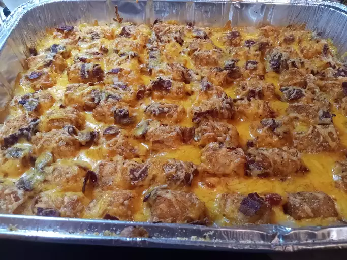

Tater Tot Casserole

What is Tater Tot Casserole?
Tater Tot Casserole is an easy dish that can be served as a main dish or a side.
Ingredients
- 1lb. Ground Beef
- 1 Can Cream of Mushroom
- 1 Pack of Frozen Tater Tots
- 2 cups Shredded Cheddar Cheese
Directions
- Preheat Oven to 350F degrees
- Cook ground beef in skillet and season with salt and pepper
- Add cream of mushroom to beef and stir
- Transfer beef to a 9x13 baking dish
- Layer tater tots evenly across the top
- Sprinkle cheddar cheese evenly across the top
- Bake in the oven for about 30 to 45 minutes until golden brown
Return To Homepage